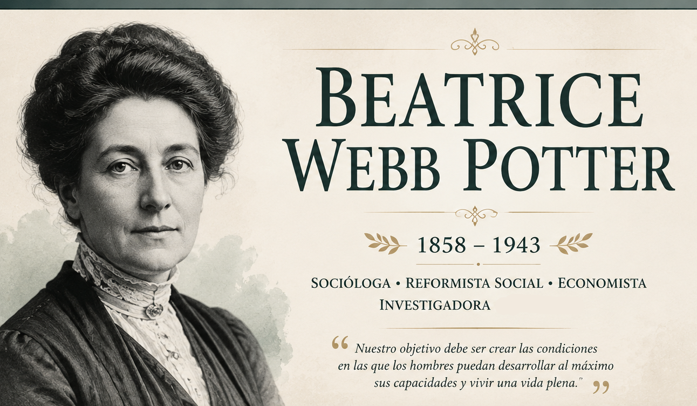

Texto

Este recurso educativo tiene como objetivo acercar la figura de Beatrice Webb, una de las pioneras en el desarrollo de la sociología moderna, y reconocer su aporte al estudio científico de la sociedad.
A través de este recorrido se busca conocer su trayectoria personal e intelectual, desde su infancia y sus primeras influencias, hasta su transformación en investigadora social, reformadora y figura destacada del socialismo fabiano. También se abordará la importancia de su método de investigación, sus propuestas de reforma social y el impacto que tuvo junto a otros pensadores de su época.
El recurso está pensado como una herramienta de apoyo tanto para estudiantes que deseen comprender la vida y las ideas de esta autora, como para docentes que busquen fortalecer el aprendizaje de la sociología y acercar a sus alumnos a una figura fundamental dentro de la historia de la disciplina.
A través de textos, recursos audiovisuales y actividades, se propone reflexionar sobre cómo la investigación social puede ayudar a comprender los problemas de una sociedad y buscar formas de transformación.